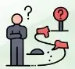
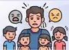
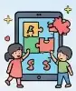
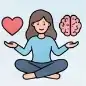
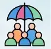

קידום תהליכי פיתוח מקצועי לתומכות חינוך · מרכז פסג"ה דבוריה
מרכז הפסג"ה שואף להיות מרחב פדגוגי אנושי, תומך ושיתופי עבור עובדי ההוראה, מוביל שותפויות ותהליכי למידה מקצועית משמעותיים לקידום איכות ההוראה, לחיזוק השלומות, המסוגלות והחוסן האישי והמקצועי של עובדי ההוראה בהתאם למאפייני המורה במאה ה-21.
הפסג"ה תפעל כארגון לומד המבוסס על נתונים, שותפויות והשפעה על המערכת החינוכית והקהילה.
כל מסע מתחיל בחיבור: יוצרים קשר עם המועצה ועם רכזת הקדם־יסודי.
הבחירה שלנו: מובילות קדם־יסודי, יחד עם המפקחת, והן גם גננות.
ארבעה שותפים, תכנית אחת, שנבנית יחד ומותאמת לשטח.
לחיצה על התמונה מגדילה אותה
הגננות רואות בתומכת שותפה משמעותית, אך מבקשות לעבור ממשימות טכניות אל יכולות רגשיות ופדגוגיות. שלושה אתגרים עלו בשאלון:

לעיתים חסרה היכולת לפעול באופן עצמאי ומגיב כשהמצב בגן משתנה.
קושי לתת מענה אישי לכל ילד במקביל לניהול השגרה של הגן.

שמירה על גבולות וסדר מול התנהגויות מורכבות של ילדים.
כל מיומנות שהגננות ביקשו, ולאן נוביל אותה בשנה ב׳ (לפי תדירות ההופעה בשאלון)

🎉 פתיחה חגיגית עם כל היישובים, שותפי התפקיד והמפקחים
התחומים שהגננות ביקשו, לפי סדר הביקוש, ושני מפגשים בכל תחום

כלים להצבת גבולות ולהתמודדות עם מצבים מאתגרים בגן.

זיהוי ילדים שזקוקים לתמיכה ומענה מותאם לשונות.
תקשורת עם הילדים, עם ההורים ובתוך הצוות.
העשרה פדגוגית, טכנולוגיה ופיתוח שפה דרך משחק.